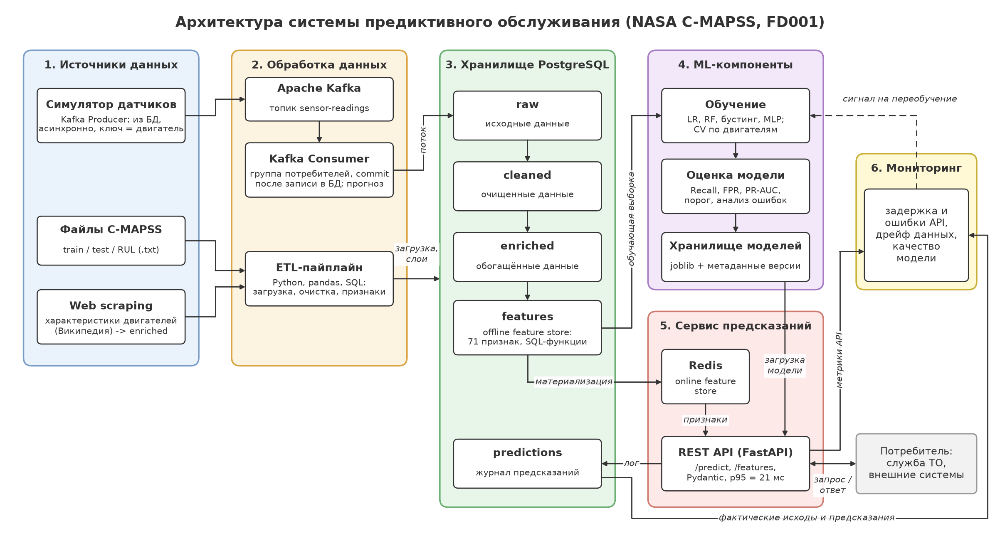

Предиктивное обслуживание
турбовентиляторных двигателей
ML-система, которая заранее предупреждает об отказе двигателя по показаниям датчиков
Итоговая аттестация · «Инженер-архитектор в сфере искусственного интеллекта» · вариант Б «Производство»
Автор: adellkhairullin · github.com/adellkhairullin/predictive-maintenance
Данные: NASA C-MAPSS, FD001
1. Задача и требования
Предупредить об отказе за 30 циклов — и не завалить ложными тревогами
- Проблема: внеплановый отказ — простой и риск; ремонт по регламенту — замена исправных узлов
- Постановка: бинарная классификация состояния двигателя на цикле:
1, если до отказа ≤ 30 циклов
- Допущение: 7 дней ≈ 30 циклов (≈ 4 полёта в сутки)
- Метрики: PR-AUC — сравнение моделей (дисбаланс 15%), порог — под Recall
| Требование | Цель |
|---|
| Recall | ≥ 0,85 |
| False Positive Rate | < 0,15 |
| Время ответа (p95) | < 50 мс |
| Работа в реальном времени | поток ≥ 100 сообщ./с |
| Запас до отказа (медиана) | ≥ 15 циклов |
| Стоимость ошибок (10 : 1) | ниже регламента |
2
2. Архитектура
Пакетный и потоковый контуры на общем Feature Store

3
3. Данные и EDA
Данные чистые, а «выбросы» — это и есть сигнал износа
- 100 двигателей до отказа (20 631 цикл), 100 тестовых с обрывом (13 096)
- Пропусков, дублей, разрывов в циклах — нет
- 8 неинформативных столбцов удалены
- Сильнее всего связаны с износом:
s_11, s_4, s_12, s_7 (|ρ| ≈ 0,7)
- 73% строк с выбросами — в последних 30 циклах → выбросы не удаляем
4
4. Архитектура данных
Слои PostgreSQL и Feature Store: офлайн + онлайн
| Слой | Содержимое |
|---|
raw | файлы и поток Kafka как есть |
cleaned | проверки, дедупликация, 33 727 строк |
enriched | RUL, целевая переменная; справочник двигателей (web scraping) |
features | 71 признак, реестр, SQL-функции истории |
monitoring | журнал всех прогнозов |
- Офлайн — PostgreSQL:
backfill_engine_features(), get_engine_features(… as_of)
- Онлайн — Redis: история двигателя и последний вектор признаков; атомарная запись (WATCH/MULTI)
- Материализация PostgreSQL → Redis и Python API
FeatureStore
- Web scraping Википедии: 7 двигателей; ближе всего к C-MAPSS — Trent 800 (+3% по тяге)
Признаки в SQL (обучение) и в Python (сервис) совпадают до 7-го знака — проверено тестом
5
5. Признаки · гипотеза H1
Качество дают признаки по истории двигателя, а не алгоритм
0,51
PR-AUC: только номер цикла
(проверка на утечку)
0,954
PR-AUC: исходные показания
14 датчиков
0,993
PR-AUC: 71 признак по окну
(среднее, разброс, тренд, отклонение от нормы)
- H1 подтверждена: прирост во всех 10 блоках кросс-валидации, критерий Уилкоксона p = 0,001
- Окна смотрят только в прошлое — изменение «будущих» показаний не меняет признаки (тест)
- Разбиение и кросс-валидация — только по двигателям (GroupKFold), иначе утечка
6
6. Методология
Один протокол для всех моделей; тест — только для финальной
- Оценка: 10 одинаковых блоков по двигателям → парные сравнения
- Подбор гиперпараметров: RandomizedSearchCV, 5 блоков, PR-AUC — для основного и трёх дополнительных алгоритмов
- Порог «с запасом»: нижняя граница 95% бутстрап-ДИ Recall (по двигателям) ≥ 0,85
- Test использован один раз; порог по нему не подбирался
| Гипотеза | Метод |
|---|
| H1 признаки по окну | Уилкоксон, 10 блоков |
| H2 бустинг > LR | Уилкоксон, 10 блоков |
| H3 требования на test | бутстрап, 95% ДИ |
| H4 p95 < 50 мс | 1000 запросов к API |
A/B: v1 (baseline) vs v2 — теневой режим по журналу прогнозов, затем 50/50 по двигателям
7
7. Результаты · сравнение моделей
Сложные алгоритмы не обошли логистическую регрессию
| Модель (лучшие гиперпараметры) | PR-AUC, 10 блоков | Recall | FPR | Время, p95 |
|---|
| Логистическая регрессия, C = 1 (baseline v1) | 0,9932 ± 0,0031 | 0,874 | 0,002 | 5,2 мс |
| Логистическая регрессия, подбор (C = 3) | 0,9929 ± 0,0032 | 0,875 | 0,002 | 5,2 мс |
| Нейросеть MLP | 0,9914 ± 0,0021 | 0,873 | 0,002 | 3,7 мс |
| Градиентный бустинг | 0,9907 ± 0,0056 | 0,869 | 0,003 | 17 мс |
| Random Forest | 0,9840 ± 0,0078 | 0,872 | 0,006 | 129 мс |
- Подбор гиперпараметров — для всех четырёх алгоритмов; у регрессии он не помог (5 лучших конфигураций в пределах 0,0002)
- H2 не подтверждена: бустинг лучше LR лишь в 2 блоках из 10 (p = 0,98)
- Финальная — логистическая регрессия, C = 1: лучшее PR-AUC, проще и интерпретируемее
8
8. Финальная модель v2 на тестовой выборке
FPR и время — с запасом; Recall — ниже требования
0,714
Recall (95% ДИ 0,59–0,80)
требование ≥ 0,85
0,001
FPR (95% ДИ до 0,0017)
требование < 0,15
21 из 25
отказов предупреждено заранее (84%)
26
циклов — медианный запас
до отказа (цель ≥ 15)
- H3 не подтверждена (по Recall); результат зафиксирован честно, порог по тесту не подгонялся
- v2 лучше v1: Recall 0,678 → 0,714, предупреждено 21 двигатель вместо 19
- Модель —
models/final_v2.joblib; метаданные: порог, признаки, метрики, версии библиотек, MD5 данных
9
8. Анализ ошибок
Модель уверенно видит близкий отказ; трудно — за 21–30 циклов
- RUL 0–20: Recall 0,98–1,00
- RUL 21–30: Recall ≈ 0,55 — признаки износа ещё слабые
- В test таких строк 63% (в train — 32%): наблюдения обрываются до отказа
- Внутри одинаковых диапазонов RUL качество на test и кросс-валидации одинаково — это не переобучение
10
9. Бизнес-эффект
При том же Recall — в 95 раз меньше ложных тревог, чем у регламента
| Стратегия (на тестовой выборке) | Recall | FPR | Пропуски | Ложные тревоги | Стоимость ошибок 10 : 1 |
|---|
| Регламент: тревога с 146-го цикла | 0,714 | 0,097 | 95 | 1 240 | 2 190 |
| Модель v1 | 0,678 | 0,0004 | 107 | 5 | 1 075 |
| Модель v2 | 0,714 | 0,001 | 95 | 13 | 963 (−56%) |
Справочно: при пороге 0,8 Recall на test был бы 0,86 при FPR 0,004 — требование достижимо.
Рекомендация: уточнять порог на реальных данных в теневом режиме (этап 1 A/B-теста).
11
10. Реальное время
REST API и Kafka: быстро, без потерь и без дублей
21 мс
p95 ответа API, 1000 запросов
(H4 подтверждена, требование 50 мс)
467
сообщений/с через Kafka
(2 consumer, требование 100)
0
дублей и потерь: LAG = 0, перезапуск
consumer не создаёт новых строк
- API: валидация Pydantic (NaN, пределы, опечатки → 422), порядок циклов (→ 409), прогрев модели
- Producer: данные из БД, ключ = двигатель, асинхронно, acks=all, идемпотентность
- Consumer: запись в БД → прогноз → commit; сбой → перечитать пачку
- Сквозная проверка: 13 096 прогнозов потока — Recall 0,7139 и FPR 0,0010, как в офлайн-оценке
12
11. Качество и развёртывание
Весь проект поднимается одной командой и проверяется автоматически
147
тестов: 131 unit и 16 интеграционных
(PostgreSQL, Redis)
75%
покрытие кода
(требование > 60%)
10
сервисов Docker Compose:
7 постоянных + 3 по запросу
2
задачи CI в GitHub Actions
на каждую отправку кода
docker compose up --build: postgres, redis, kafka → etl → feature-sync → api, consumer- CI: тесты на PostgreSQL 17 и Redis 7; сборка образа, проверка API, Feature Store, Kafka, скорости и качества потока
- Отдельный коммит на каждую задачу, README с инструкциями,
.gitignore, версии библиотек зафиксированы
13
12. Выводы
Итоги, ограничения, рекомендации
Достигнуто
- Полный цикл: требования → данные → модель → сервис → поток → CI
- FPR, время ответа, запас до отказа, стоимость ошибок — в норме
- H1 и H4 подтверждены
Ограничения
- Recall на test 0,71 < 0,85 (H3 не подтверждена)
- Данные симуляционные, один режим и тип отказа
- 30 циклов ≈ 7 дней и 10 : 1 — допущения
Рекомендации
- Уточнить порог в теневом режиме на реальных данных
- Признаки, чувствительные к ранней деградации (21–30 циклов)
- Проверить на FD002–FD004 (несколько режимов)
Спасибо! Вопросы?
14